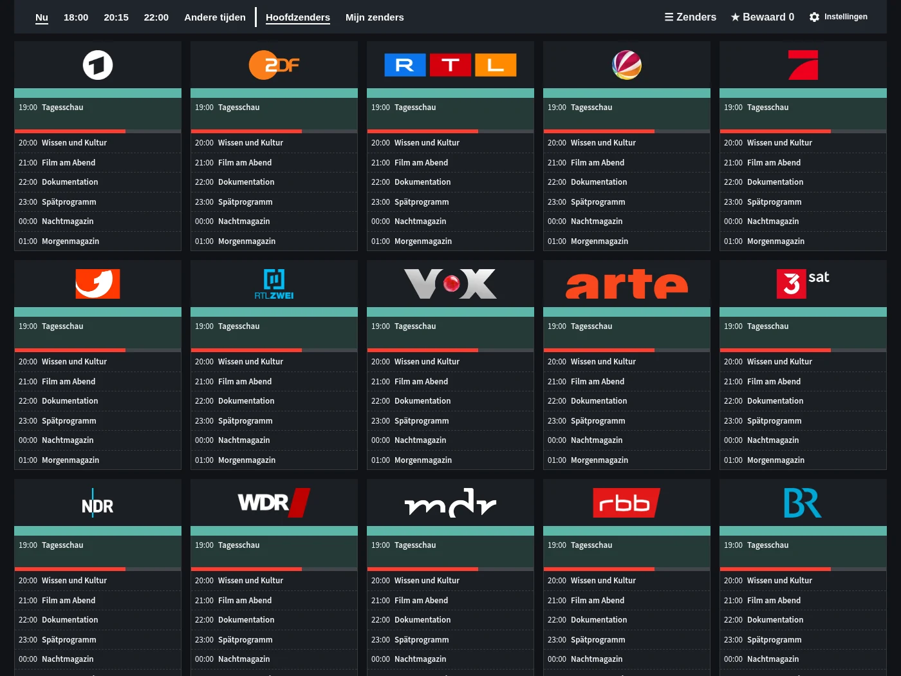
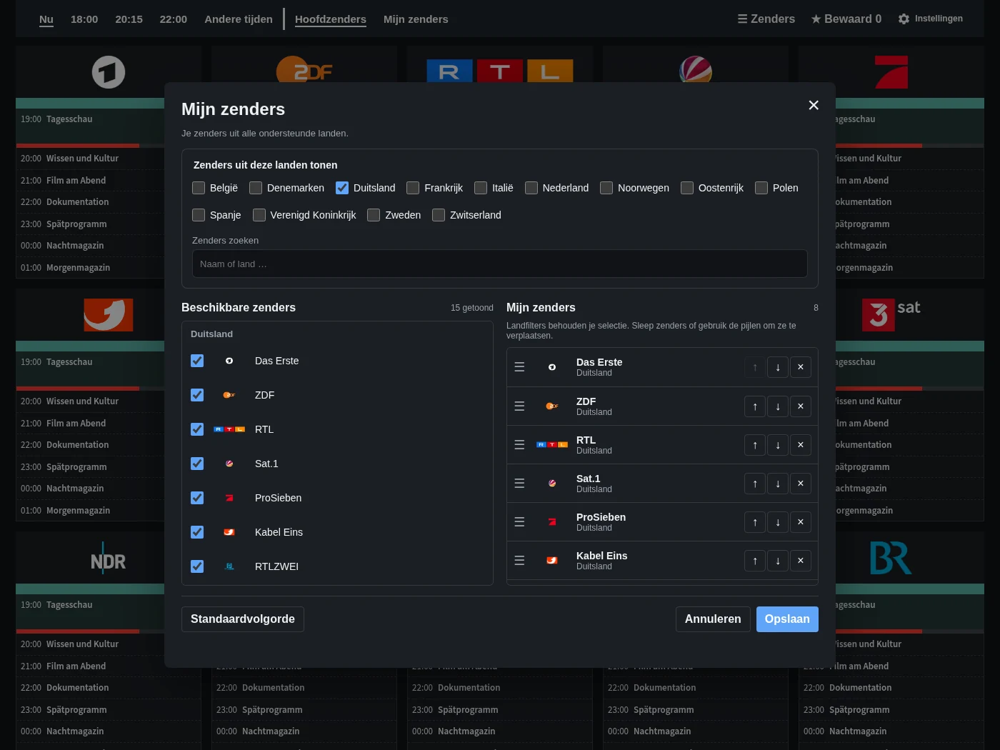
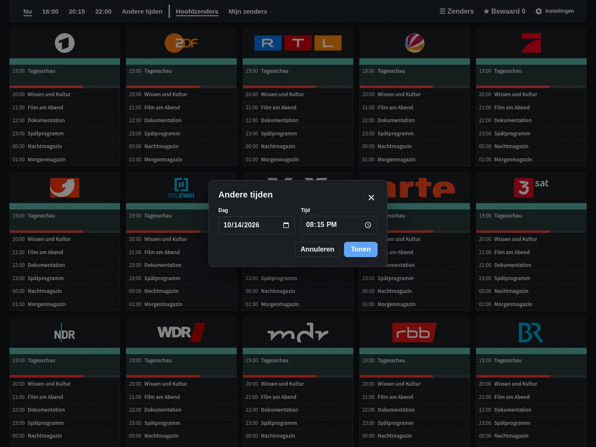
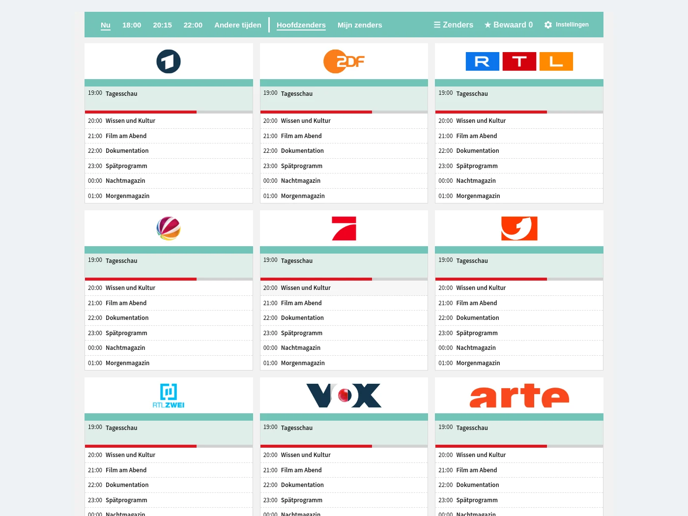

Programmaoverzicht
Zenders, tijden en programma’s in één oogopslag. Ga direct naar nu, 18:00, 20:15 of 22:00.
Bekijk de programmagids, persoonlijke zenderlijsten, tijdkeuze en de optionele dashboardkaart.

Zenders, tijden en programma’s in één oogopslag. Ga direct naar nu, 18:00, 20:15 of 22:00.

Kies favorieten uit de beschikbare landen en zet ze in je eigen volgorde.

Kies een andere datum en tijd zonder de gids te verlaten.

Voeg TV Guide toe aan je dashboard. De volledige gids is ook beschikbaar in de zijbalk.
Voorbeeldprogramma’s. Programmatitels blijven in hun oorspronkelijke taal.
Gratis en direct in Home Assistant.
Openen in HACS